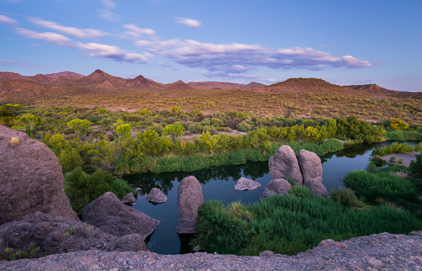

Stronger together for springs.
A global network connecting organizations and people working to protect, restore, and sustainably steward springs and spring-dependent species.
Great work is happening. Too often, it happens in isolation.
Knowledge does not always reach the people who need it. Successful approaches can remain local. Organizations may lack partners, expertise, or resources. The Alliance exists to connect and strengthen that work—not replace it.

A simple model for collective action.
Connect
Build relationships.
Bring organizations, researchers, communities, governments, funders, and practitioners together.
Enable
Build capacity.
Expand access to knowledge, skills, tools, technical support, partnerships, and resources.
Transform
Turn connection into change.
Strengthen and scale conservation action, policy, practice, investment, and awareness.

Built to amplify what already works.
The Alliance creates a shared platform for collaboration while organizations, communities, and initiatives retain their own identities and strengths.
Explore the Community →